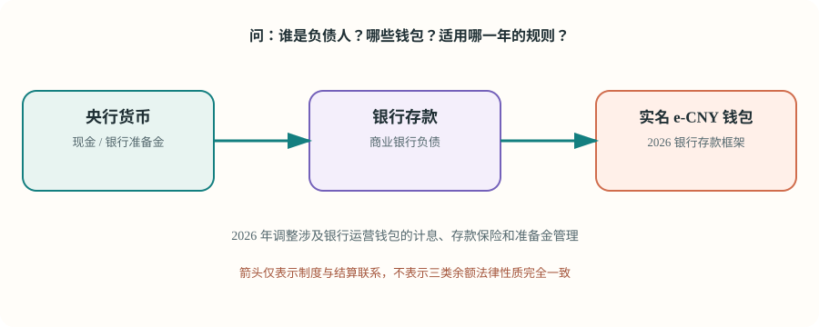

货币银行学 · 第 26 章
数字人民币与 CBDC：究竟是谁的负债？
从中央银行货币、银行存款与支付工具的区别出发，解释数字人民币 2026 年管理框架变化、实名钱包计息、跨境试点和批发型 CBDC，并比较欧洲数字欧元的进度。
手机里的数字支付都表现为屏幕上的余额，但不同余额背后的债务人、法律保护和结算安排并不相同。数字人民币尤其需要考虑时间维度：早期试点侧重数字化现金属性，2026 年实施的新管理框架又把商业银行运营的实名数字人民币钱包纳入存款负债和计息管理。讨论“CBDC 一定是什么”之前，先问具体制度、钱包类型和交易阶段。
分清账户余额、支付指令与最终结算资产
现金是中央银行发行的法定货币；商业银行存款是银行对客户的负债；银行卡和移动支付通常是发起或传送支付指令的工具，不自动等于一种新的货币。CBDC（中央银行数字货币）通常指央行负债的数字形态，但具体发行、持有与流通安排因司法辖区而异，不能把所有数字化价值储存都统称为 CBDC。
在两层运营结构下，央行提供规则和核心基础设施，获准运营机构直接面向用户提供钱包、兑换与支付服务。机构承担哪些负债、资金是否属于央行负债或银行存款、谁受存款保险保护，要按特定运营规则确定。身份认证、账户限额和离线支付能力也可能因钱包层级不同。

2026 年数字人民币管理框架究竟改变了什么？
中国人民银行 2025 年 12 月 29 日公布的新管理框架于 2026 年 1 月 1 日 起实施。公告明确：商业银行运营的数字人民币钱包中的资金纳入银行存款负债管理，银行按照相关存款利率管理规定对钱包余额计息，纳入银行资产负债管理和存款保险保护；数字人民币运营也纳入准备金制度框架。[1]
这意味着不能继续把所有数字人民币钱包余额不分类型地断言为“非计息、完全等同 M0 现金、全部为同一种央行直接负债”。需要区分实名银行运营钱包与其他运营主体、其他钱包类别，以及原有数字现金试点的制度表述。新框架并不自动意味着所有钱包都可以发放贷款，贷款仍是金融机构按授权、资本与风控规则开展的业务。
香港特区政府在 2026 年 3 月答复中也明确提到实名 e-CNY 钱包余额计息，以及运营银行纳入准备金管理。[2] 这些文件描述了制度变化；具体用户计息规则、实名要求和产品功能仍应以开户机构和当时官方规则为准。
双层运营怎样连接钱包与支付结算？
一种简化支付过程是：用户在获准运营机构开通钱包，完成适用的身份核验；钱包通过数字人民币系统与商户钱包交互；后台依据支付与清算规则更新账本或处理结算。当不同运营机构参与交易时，互联互通、最终结算和合规责任必须有清晰规则。
“账户”与“币串”是不同的技术设计思路：账户型记录由谁拥有多少余额；价值凭证型设计着重凭证的转移与验证。实际系统可能采用混合模式。安全性不只来自加密算法，还包括权限、失窃处理、离线双花控制、运营机构管理和数据保护。
可控匿名与“完全匿名”不是同义语。隐私和反洗钱合规之间需要制度平衡，钱包身份层级和交易记录处理应遵守实际法律和隐私规则。
跨境支付：mBridge 做到了什么？
跨境支付涉及不同货币、时区、监管与账户体系。传统代理行路径可能有多次信息核对、汇率转换和流动性预置。多 CBDC 平台试图把多种法定货币的数字结算工具放在可互通的基础设施上，减少对账与结算时差。
国际清算银行介绍，Project mBridge 从 2021 年起由多个央行与货币当局合作开展；2024 年 6 月项目达到最小可行产品（MVP）阶段。[3][4] “达到 MVP”意味着技术和业务试验取得进展，不能自动等同全球大规模商业部署或无成本跨境转账。
香港与内地之间的数字人民币跨境试点还涉及钱包开立、充值与本地快速支付系统的连接。2026 年 3 月香港政府答复列出了试点进度，同时强调后续钱包优化的具体方案和时间表仍需进一步讨论。[2]
世界上其他央行走的是同一条路吗？
零售型 CBDC 面向家庭和商户支付，批发型 CBDC 面向受许可金融机构的结算与金融市场基础设施。各国也在比较改造即时支付系统、代币化商业银行存款和 CBDC 的成本、隐私、离线能力与金融稳定影响。
欧洲中央银行的数字欧元截至 2026 年仍处准备和试点筹划阶段，是否发行依赖欧盟立法和后续央行决策。ECB 的 2026 年公开信息称，若必要法规按预期形成，目标是为可能在 2029 年首次发行作好准备。[5] 这是条件性计划，不应写成“数字欧元已经正式流通”。
比较政策路径时，必须标出设计阶段 / 试点 / 正式上线 / 商业规模的区别。不同国家选择不是简单的技术优劣排名，还涉及金融结构、现有支付设施和隐私制度。
效率、隐私和银行体系之间的权衡
CBDC 可能带来支付可及性、系统韧性和结算效率改善，但也可能增加网络安全、运营集中、隐私保护和银行资金迁移方面的设计压力。若公众可以在危机时迅速把大量存款转换为无信用风险的央行负债，银行融资稳定性可能承压；持有额度与计息设计可能影响迁移激励。
反过来，某些钱包在新制度下被作为银行存款负债管理，也不能仅根据“数字人民币”四个字推断其和央行现钞有完全相同的资产属性。法律责任、保险覆盖和结算层次应逐项核对。
交互练习：先识别负债主体和运营规则
比较四类数字化支付安排
选择工具，观察负债主体与风险。数字人民币为制度演进中的专门示例，具体以适用钱包和当期规则为准。
现钞：中央银行发行的货币，通常不计息；持有者需承担遗失、盗窃等实体保管风险。
核心结论
- 数字支付工具、银行存款和 CBDC 不能因为表现为手机余额就混为一谈。
- 中国数字人民币 2026 年框架明确对银行运营实名钱包作存款负债、计息与准备金管理，需区分钱包类型。
- mBridge 的 2024 年 MVP 阶段不是对全球全面部署的证明。
- CBDC、即时支付与代币化存款各有适用场景；效率、隐私与金融稳定需要联合评估。
参考资料与口径
- 中国政府网：2026 年数字人民币管理框架调整公告解读（2025-12-29）
- 香港特区政府：数字人民币与稳定币立法会答复（2026-03-25）
- BIS：Project mBridge 项目介绍
- BIS：mBridge 达到最小可行产品阶段（2024-06-05）
- ECB：Digital euro FAQs（2026）
统计序列、研究框架和政策规则的适用范围可能随发布时间与司法辖区变化。文中的模拟数字均为明确标识的教学示例，不代表真实账户、央行预测或投资回报。